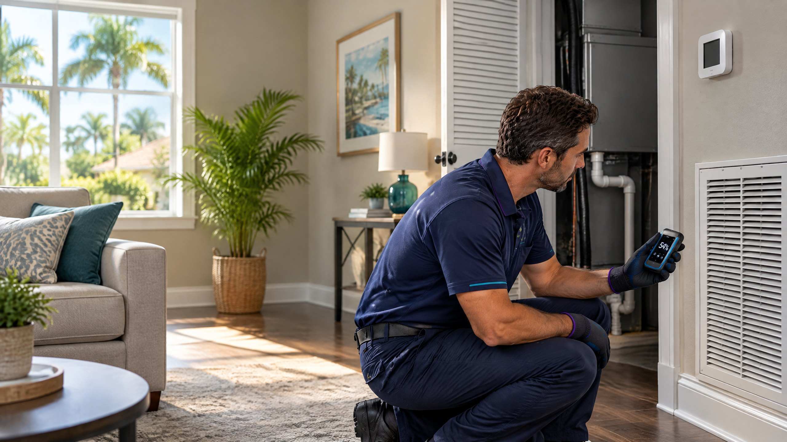

Direct Answer
A musty smell that appears when a Tampa AC starts can point to lingering moisture near the indoor coil, drain pan, filter area, or another damp part of the home. The timing helps narrow the search, but odor alone does not confirm mold or identify its location. Check the filter and visible water, then request an inspection if the smell persists.

Florida air conditioners cool and remove moisture: warm indoor air passes over a cold evaporator coil, and condensed water should drain away. UF/IFAS Extension explains this cooling-and-drainage process for Florida homes.[4] A smell carried by moving air may seem to come from a vent even when the source is an air-handler compartment, nearby building material, or another damp area. That is why the first step is to describe when and where you notice it rather than name a cause.
Why the Smell Is Most Noticeable When Cooling Begins
When the thermostat calls for cooling, the indoor blower begins moving air across the filter, coil area, and supply system. If a nearby surface is damp or an odor is already present in the return-air path, that airflow may bring the smell into the room. A short burst of odor does not establish that the coil, ducts, or any other component contains mold. A persistent or worsening smell deserves investigation even if it fades after the first few minutes.
Ask whether it happens after the home has been closed up, after a rainy period, only in one room, or both when the blower runs by itself and when the compressor cools. These observations are clues, not diagnostic tests. An odor throughout the house even with the AC off may point beyond the cooling equipment.
Four Moisture Locations Worth Checking
| Possible location | What to observe | Who should investigate |
|---|---|---|
| Filter and return area | A filter that is dirty, damp, the wrong fit, or exposed to a nearby leak; an odor around the return grille | Homeowner can inspect an accessible filter; request service for dampness or recurring odor |
| Evaporator coil and pan | Evidence of water where the air handler sits, an odor near its closet, or water that does not appear to leave normally | HVAC technician checks coil, pan, airflow, and drainage |
| Drain line and discharge | A float-switch shutdown, water near the indoor unit, or a change in the normal condensate outlet | HVAC technician traces restrictions, slope, trap, pan, and drain path |
| Building surfaces near air pathways | Water stains, a wet wall or ceiling, a recent roof/plumbing leak, or a smell concentrated in one room | Appropriate building or moisture professional; HVAC inspection if equipment is implicated |
EPA identifies poorly draining air-handler condensate pans as possible hidden moisture sources and recommends removing standing water under cooling coils by maintaining proper pan drainage.[1] EPA also advises keeping air-conditioning drip pans clean and drain lines unobstructed.[2] Those recommendations support checking the water path, not assuming that every odor is a clogged line. If water keeps backing up, our focused guide to repeat AC drain-line clogs explains the drainage questions in more detail.
What a Homeowner Can Check Without Opening the Air Handler
- Describe the timing. Record whether the odor starts with the blower, only with active cooling, or is present when the system is off. Note which rooms are affected and whether it returns on each cycle.
- Inspect the accessible filter. Follow the equipment instructions to inspect and replace a dirty or damp filter with the correct size and type. ENERGY STAR advises homeowners to inspect, clean, or change filters monthly.[3]
- Look for visible moisture. Without removing access panels, check the floor near the air handler and the area around an accessible condensate outlet for unusual water or staining. Report standing water or a recent leak.
- Observe indoor humidity. A home hygrometer or thermostat humidity display can show whether dampness persists. EPA recommends keeping indoor relative humidity below 60%, ideally 30–50% if possible; a single reading does not identify the odor source.[2]
- Request the right inspection. If the smell repeats, becomes stronger, accompanies water damage, or affects several rooms, ask for an evaluation rather than spraying fragrance into a vent or ordering a service based only on the smell.
Do not treat the smell as a mold diagnosis
An odor cannot identify a species, prove contamination, or show where a moisture problem began. If you know or suspect the HVAC system is contaminated with mold, EPA advises against running it until the situation is evaluated because operation could spread material through the building.[2] If a strong burning or electrical odor appears instead, turn cooling off and request prompt service.
What a Focused HVAC Visit May Include
A technician can examine the accessible air-handler area, filter fit and condition, indoor coil, condensate pan and drain, and the blower's airflow. ENERGY STAR includes drain inspection, coil cleaning, and blower checks among professional cooling-maintenance tasks.[3] If a technician finds a drainage issue, On The Way offers condensate drain cleaning. If the indoor coil needs attention, evaporator coil cleaning is a distinct service. Neither should be prescribed from smell alone.
An inspection should also ask whether the odor continues when cooling equipment is off, whether a plumbing or roof leak developed recently, and whether damp building material needs a different specialist. EPA notes that a moldy smell without a visible source can suggest hidden moisture elsewhere in a home.[2] HVAC maintenance cannot correct a roof, wall, or plumbing leak. If a separate building-moisture problem is found, address that water source with the appropriate qualified professional.
Why Tampa's Climate Changes the Conversation
In a humid Florida home, cooling and moisture removal are related but not identical. UF/IFAS Extension recommends monitoring indoor humidity, maintaining the HVAC system, and keeping condensate drains working.[4] A normal temperature reading does not prove that a pan drains freely or that damp materials elsewhere are dry. At the same time, high humidity by itself does not prove the AC is the source of an odor.
For the broader question of why a home still feels damp with cooling on, see why Tampa homes can feel humid with the AC running. For routine filter, coil, and drainage care, review AC maintenance. This article stays focused on the odor-at-startup question rather than attempting to diagnose whole-house humidity.
When to Request Service
Request AC repair when the smell recurs across several cycles, comes with weak cooling or airflow, or is accompanied by water near the indoor unit. Tell the technician exactly when it starts, which rooms are affected, and whether you observed a damp filter, visible water, or a float-switch shutdown. If there is extensive water damage, suspected hidden growth in building material, or health concerns, seek an appropriately qualified moisture or health professional as well.
On The Way Heating & Air is local and family-rooted. Dustin Miller began working in HVAC with his father in 2006 and has helped build several service companies. A careful visit should look for the actual moisture or equipment issue before recommending a specific repair.
Frequently Asked Questions
Does a musty AC smell mean mold is in my ducts?
No. Smell alone cannot confirm mold or locate its source. Moisture may be near the coil or drain, at the filter or return, or elsewhere in the home. Inspect the source before choosing a corrective service.
Why does the odor fade after the AC has run for a while?
Changing airflow may make an existing smell less noticeable, but fading is not proof that a moisture source has dried or disappeared. Note whether the smell returns at each startup and ask for an inspection if it does.
Can changing the filter fix a musty smell?
Replacing a dirty or damp accessible filter is a reasonable first check. If the smell continues, the indoor coil, pan, drain, nearby materials, and other moisture sources may still need inspection.
Should I spray a disinfectant into the vents?
Do not spray chemicals into the system as a substitute for identifying the cause. EPA emphasizes fixing moisture sources; the appropriate cleaning or repair depends on what an inspection actually finds.
Sources
- U.S. Environmental Protection Agency: Mold Course Chapter 2—Why and Where Mold Grows
- U.S. Environmental Protection Agency: A Brief Guide to Mold, Moisture and Your Home
- ENERGY STAR: Heating and Cooling Maintenance Checklist
- UF/IFAS Extension: Understanding Florida Homes
Reviewed by a Local HVAC Owner
Dustin Miller, Owner of On The Way Heating & Air. Dustin began working in HVAC with his father in 2006. This is general homeowner guidance: odor alone cannot establish contamination, a mold diagnosis, or the need for a particular service. A technician should evaluate equipment findings; a building-moisture professional may be needed for a non-HVAC leak.